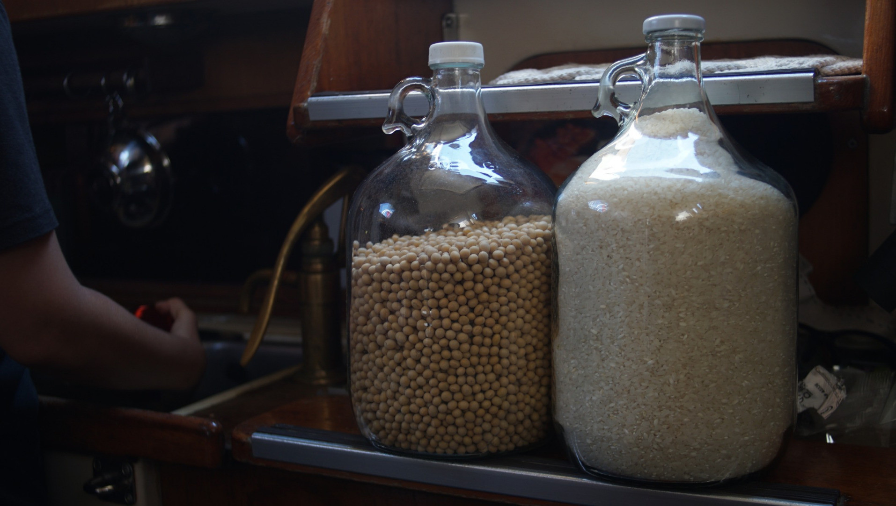

provisioning
While modern grocery stores can be found in larger cities, these can often be far apart. In smaller towns, fresh vegetable and fruit markets are seldom open everyday, most only once a week. We picked up the habit of buying food in large quantities.
Aboard Pino, we have no refrigeration (read our notes). Canned, dried or shelf-stable foods are a good alternative to this.
Canned foods: Canning doesn't preserve many nutrients in food, but in a bind in can be a useful way to carry food, although cans can rust through overtime (we've had this happen). We remove tags so they don't draw moisture, and label the cans with a marker pen. Our favorite canned foods are: tomato paste, artichokes, jackfruit, maple syrup(!!!), black olives, corn niblets and chipotle peppers. Buy an assortment of cans, find ones which suit your tastes. We usually look for cans without added salt or sweeteners.
Dry foods: Dry food will keep for a long, long time on ocean passages. We keep a variety of dried grains, but also dried vegetables since we don't have refrigeration. Dried veg keep well in air-tight containers, their nutrients are preserved, and add variety to dishes. We add dry vegetables to boiling pasta to re-hydrate them. Dry mushrooms like shitake, and kombu(algae) are a great base for broth. Our favorite dry foods are nori, kombu, dried tomatoes, raisins, dates, TVP(textured vegetable protein), shitake, dry tofu, rice cakes, radish etc. We stock many types of whole grains (buckwheat, whole wheat, cornmeal, oats). Different grains offer different nutritional profile, and meal options. To read more about how we store food, see food storage.
We like to buy flour in bulk. We keep it separate jars (each accommodating a 2 kg bag). Keeping some types of flour separate helps to avoid problems, like weevils. If one batch is contaminated, the other might be fine. Keeping the whole grain version of those flours, like wheat berries, is even better because they last longer, but then it might be necessary to carry a grain mill (see our food grinder).
Shelf-stable foods: Shelf stable food kept in tetra-paks are useful to keep perishable goods. Our favorite include tofu and plant milks.
Provisioning can be expensive in certain countries, so stocking strategically with cheaper stores, ahead of time, can help to save money. If you're shopping and you see something you like at a good price, buy tons of it, chances are you won't be seeing it again on your next visit (turn-arounds are quick in some stores, and won't re-stock the same items again).
Preserving food, via lactofermentation, or canning, is essential when traveling on a budget. A pressure cooker and glass jars will too save you money and will help reduce waste. Preparing your own stores, also means that you choose what goes in it, therefore reducing your intake of added salts and sugars.